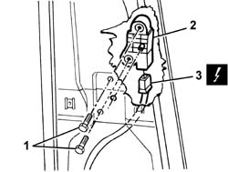
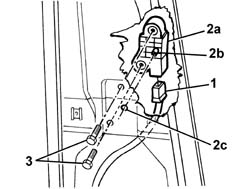
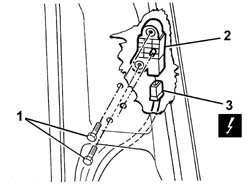
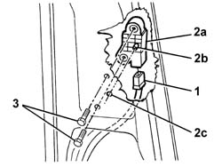

5580C40 sidebag sensor (one), lh or rh - r r
- Path
- Procedures > 55 ELECTRICAL EQUIPMENT > 5580 SPECIAL ACCESSORIES > 5580C air bag system > 5580C40 sidebag sensor (one), lh or rh - r r
- Kind
- repair procedure (removal / refitting; the operation number is the code)
- Applies to
- all engines; all production periods
- Interactive page
- https://sloeber94.github.io/elrnDB-a147/en/#/3025614
Applies to: all engines; all production periods; only with equipment: 5 porte
 Removing
Removing
 Refitting
Refitting7040L40 front compartment scuff strip - r r
7040L44 rear compartment scuff strip - r r
7040H36 central trim lower element - r r
7040H38 central pillar upper element - r r
1. Undo the bolts fixing the Side Bag sensor.
2. Move the Side Bag sensor.
3. Disconnect the electrical connection and recover the Side Bag sensor.
 | Name | Connector |
|---|---|---|
3 | Sensor for driver's, Side Bag |
| Name | Connector |
|---|---|---|
3 | Sensor for passenger, Side Bag |

Applies to: all engines; all production periods; only with equipment: 5 porte
Refitting
RemovingCheck that the side Air Bag sensor is not damaged.
1. Connect the electrical connection
2. Position the Side Bag sensor (2a) in its housing.
3. Tighten the screws.

Applies to: all engines; all production periods; only with equipment: 5 porte
7040H38 central pillar upper element - r r
7040H36 central trim lower element - r r
7040L44 rear compartment scuff strip - r r
7040L40 front compartment scuff strip - r r
Check the operation of the system using the Examiner or the other diagnostic equipment.
Applies to: all engines; all production periods; only with equipment: 3 porte
Removing
Refitting7040L40 front compartment scuff strip - r r
7050A22 rear seat cushion - r+r
1. Undo the bolts fixing the Side Bag sensor.
2. Move the Side Bag sensor.
3. Disconnect the electrical connection and recover the Side Bag sensor.
| Name | Connector |
|---|---|---|
3 | Sensor for driver's, Side Bag |
| Name | Connector |
|---|---|---|
3 | Sensor for passenger, Side Bag |

Applies to: all engines; all production periods; only with equipment: 3 porte
Refitting
RemovingCheck that the side Air Bag sensor is not damaged.
1. Connect the electrical connection
2. Position the Side Bag sensor (2a) in its housing.
3. Tighten the screws.

Applies to: all engines; all production periods; only with equipment: 3 porte
7050A22 rear seat cushion - r+r
7040L40 front compartment scuff strip - r r
Check the operation of the system using the Examiner or the other diagnostic equipment.
Topics linked from this page (8)
- 7040H36 central trim lower element - r r
- 7040H38 central pillar upper element - r r
- 7040H50 rear panel - r r
- 7040L40 front compartment scuff strip - r r
- 7040L44 rear compartment scuff strip - r r
- 7050A22 rear seat cushion - r+r
- K66 Sensor for driver's, Side Bag
- K67 Sensor for passenger, Side Bag